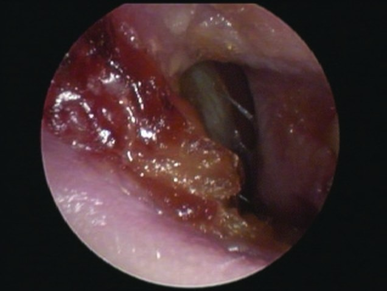
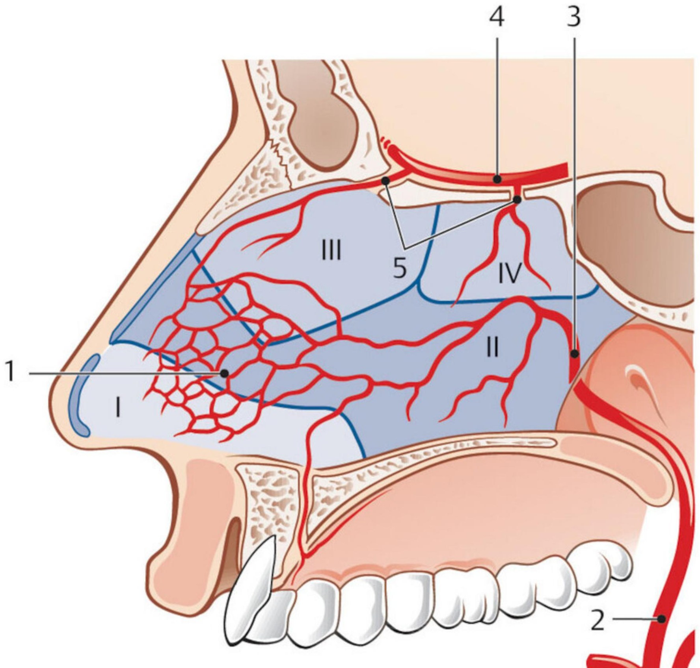
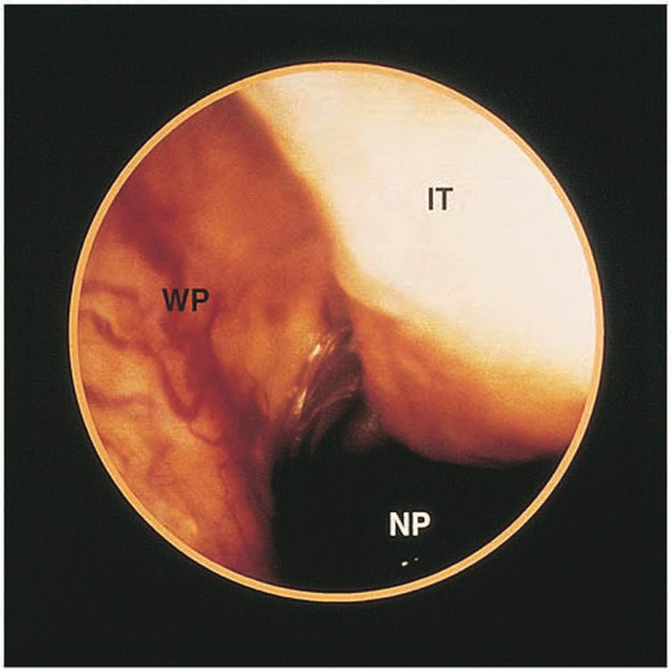
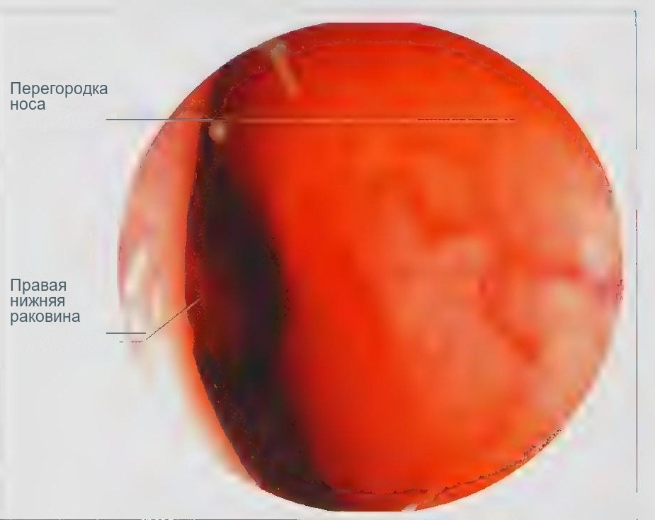

Сверка с PDF рубрикатора выполняется…
Носовое кровотечение
Клинические рекомендации от 08.12.2025 · взрослые и дети
Основные положения
- Первое мероприятие при кровотечении из передних отделов полости носа: плотное прижатие крыльев носа к носовой перегородке на 5 минут и более.
- Если кровотечение не угрожает жизни, порядок действий:
- местная остановка кровотечения: прижатие крыльев носа, сосудосуживающие средства, коагуляция или тампонада;
- только после этого коррекция гемостаза или отмена антикоагулянтов.
- При продолжающемся кровотечении, источник которого визуализировать не удаётся, необходима передняя тампонада полости носа.
- Артериальное давление измеряют у каждого пациента, что позволяет выявить артериальную гипертензию и оценить объём кровопотери.
- Показания к госпитализации:
- неэффективность первичных мероприятий;
- значительная кровопотеря или интенсивное кровотечение;
- признаки гиповолемии;
- тяжёлая сопутствующая патология;
- высокий риск рецидива.
- переливание крови;
- задняя тампонада;
- перевязка сосудов;
- эмболизация;
- передняя тампонада нерассасывающимся материалом, если удалить тампоны амбулаторно невозможно.
Клиническая картина и классификация
Определение
Под носовым кровотечением понимается кровотечение из повреждённых сосудов полости носа, околоносовых пазух или носоглотки, а также из сосудов полости черепа при повреждении верхней стенки полости носа.
Этиология
Различают посттравматические, в том числе послеоперационные, и спонтанные носовые кровотечения. Спонтанное кровотечение является симптомом местного или общего заболевания.
Поражение сосудов слизистой оболочки полости носа наблюдается при её атрофии, специфическом воспалении (туберкулёз, сифилис), опухолях полости носа и околоносовых пазух, сосудистых мальформациях, гранулематозе с полиангиитом.
У детей кровотечение в большинстве случаев обусловлено повреждением слизистой оболочки (инородное тело, травма, в том числе ятрогенная), острыми инфекциями верхних дыхательных путей и опухолями.
Корки на перегородке носа у ребёнка с рецидивирующими носовыми кровотечениями (эндоскопия)

У детей до двух лет носовое кровотечение встречается очень редко, приблизительно в одном случае из 10 000. При возникновении кровотечения в этом возрасте необходимо исключить заболевания крови и врождённую патологию, в частности гемангиому полости носа и носоглотки.
Классификация
- изменения сосудов полости носа;
- нарушения свёртывания крови;
- сочетание этих причин.
- передние отделы полости носа;
- задние отделы полости носа;
- околоносовые пазухи;
- носоглотка;
- внутричерепные сосуды.
Кровоснабжение полости носа

Клиническая картина
При переднем кровотечении кровь вытекает преимущественно наружу, при заднем стекает в носоглотку.
Сплетение Вудраффа справа — частый источник заднего носового кровотечения у взрослых (эндоскопия)

- кровянистые выделения из носа;
- стекание крови по задней стенке глотки;
- недомогание;
- при заглатывании крови дискомфорт в животе, тошнота, стул чёрного цвета.
Общие симптомы и объём кровопотери таблица 1 в тексте КР
| Шок | Признаки | Кровопотеря |
|---|---|---|
| Отсутствует | Признаки отсутствуют | до 10% объёма циркулирующей крови (до 500 мл) |
| Лёгкий | Пульс до 100, систолическое артериальное давление выше 100 мм рт. ст., конечности холодные, диурез не нарушен | 15–20% (750–1250 мл) |
| Средний | Пульс до 120, систолическое артериальное давление 90–100 мм рт. ст., пульсовое давление снижено, беспокойство, потливость, бледность кожных покровов, диурез менее 50 мл в час | 25–35% (1250–1750 мл) |
| Тяжёлый | Пульс более 120, систолическое артериальное давление ниже 60 мм рт. ст. или не определяется, ступор, резкая бледность кожных покровов, конечности холодные, сухость языка и кожи, анурия | более 35% (более 1750 мл) |
Анамнез
- время начала, длительность и частоту кровотечений;
- сторону предшествующих кровотечений;
- госпитализации и переливания крови в связи с ними;
- приём антиагрегантов, антикоагулянтов и других препаратов;
- артериальную гипертензию, коагулопатии, анемию;
- кровотечения у родственников;
- травмы и операции на полости носа и околоносовых пазухах.
Носовое кровотечение, особенно рецидивирующее, может быть первым проявлением коагулопатии, наследственной геморрагической телеангиэктазии, опухоли полости носа или носоглотки, заболеваний печени или почек. Беспричинное появление синяков и петехий, кровотечения из внутренних органов в анамнезе свидетельствуют в пользу системного нарушения свёртывания крови.
- антикоагулянты: варфарин, гепарин, дабигатран, апиксабан и другие;
- антиагреганты: ацетилсалициловая кислота, клопидогрел;
- многие назальные спреи, в том числе сосудосуживающие и глюкокортикостероидные;
- некоторые наркотические вещества.
Кровотечение на фоне антикоагулянтов или антиагрегантов может потребовать их отмены или снижения дозы; у таких пациентов чаще рецидивы и кровопотеря более 250 мл, требующая переливания крови.
Скрыто: болезни сосудов носа, системные причины.
В учебнике: заболевания полости носа. Анатомия и физиология: нос, околоносовые пазухи.
Диагностика
Диагноз устанавливается при подтверждении кровянистых выделений из носа данными риноскопии и фарингоскопии.
Осмотр оториноларинголога
Каждого пациента с носовым кровотечением осматривает оториноларинголог: оценивает общее состояние, ищет источник кровотечения и определяет тактику лечения.
При необходимости госпитализации следует выбирать стационар, в котором имеется дежурный оториноларинголог. Если во время кровотечения пациент не был осмотрен оториноларингологом, в том числе в связи с самопроизвольной остановкой кровотечения, необходима плановая консультация оториноларинголога.Оценка гиповолемии
У всех пациентов оценивают пульс и уровень сознания, осматривают кожу и доступные слизистые оболочки.
Диагностические признаки гемодинамических нарушений вследствие кровопотери- обморок;
- тахикардия;
- тахипноэ;
- бледность кожных покровов и слизистых оболочек.
Кровоизлияния на коже и слизистых оболочках при отсутствии травмы могут указывать на системное нарушение свёртывания крови.
Кровотечение из зоны Киссельбаха — участка передних отделов слизистой оболочки перегородки носа, типичного источника носового кровотечения местной причины; на заднем плане — правая нижняя носовая раковина

- повторные кровотечения из обеих половин носа;
- носовые кровотечения у родственников.
Цель: исключение наследственной геморрагической телеангиэктазии (болезни Рандю—Ослера—Вебера).
Измерение артериального давления
- все пациенты.
- артериальная гипертензия;
- артериальная гипотензия может свидетельствовать о значительной кровопотере.
Эндоскопическое исследование полости носа и носоглотки
- источник кровотечения не визуализируется при передней риноскопии.
Общий анализ крови
- пациенты с носовым кровотечением.
Исследование позволяет оценить выраженность постгеморрагической анемии и тромбоцитарный гемостаз.
Диагностические признаки- о кровопотере судят по уровню гемоглобина и гематокриту (таблица ниже).
Степень кровопотери у взрослых таблица 2 в тексте КР
| Степень | Объём кровопотери | Гемоглобин, г/л | Гематокрит, % |
|---|---|---|---|
| I | до 500 мл | более 120 | более 40 |
| II | 500–1000 мл | 100–120 | 30–40 |
| III | 1000–1500 мл | 80–100 | 20–30 |
| IV | более 1500 мл | менее 80 | менее 20 |
Коагулограмма
Международное нормализованное отношение (МНО), фибриноген, активированное частичное тромбопластиновое время (АЧТВ), протромбиновое время.
Показания- рецидивирующие кровотечения;
- кровотечение, требующее госпитализации.
У пациентов, получающих варфарин, МНО выше 4,5 прогностически неблагоприятно.
На фоне приёма прямых пероральных антикоагулянтов (дабигатран, ривароксабан и др.) эти показатели могут не отражать степень гипокоагуляции.Консультации специалистов
- артериальная гипертензия;
- анемия;
- коагулопатия;
- другие сопутствующие заболевания, влияющие на течение кровотечения.
- рецидивирующие кровотечения и лабораторные признаки тромбоцитопатии или коагулопатии.
Лечение
Целью лечения является остановка кровотечения, устранение факторов риска и коррекция последствий кровопотери, в том числе гиповолемии и анемии.
Если кровотечение не угрожает жизни, его в первую очередь останавливают местными методами:
- прижатие крыльев носа;
- сосудосуживающее средство;
- коагуляция;
- тампонада.
Корригировать гемостаз или отменять антикоагулянты и антиагреганты следует лишь после этого: системная коррекция сопряжена с риском осложнений, прежде всего тромбоэмболических.
Остановка кровотечения: порядок действий
- Прижатие крыльев носа к носовой перегородке на 5 минут и более, как правило на 5–15 минут. Предварительно пациент сморкается для удаления сгустков, сидит или стоит с небольшим наклоном головы вперёд; манипуляцию может выполнить сам пациент. Если кровь продолжает стекать, источник, вероятнее всего, расположен глубже.
- Источник установлен, кровотечение продолжается: аппликация на источник турунды с сосудосуживающим средством (взрослым); взрослым и детям возможна аппликация гемостатического средства.
Сосудосуживающие средства у взрослых
- однократно на турунде: ксилометазолинoff-label или эпинефринoff-label;
- оксиметазолинoff-label, спрей: по 2 впрыскивания в каждую половину носа 3 раза в сутки, 3–5 дней.
Пометка off-label (в КР — знак #) обозначает применение вне инструкции.
При артериальной гипертензии, ишемической болезни сердца (ИБС) и ишемии головного мозга сосудосуживающие препараты применяют с осторожностью.
Аппликация гемостатического средства на турунде (однократно)- взрослые: транексамовая кислотаoff-label, 5 мл на кусочек ваты или марли, на источник кровотечения на 10–30 минут;
- взрослые и дети: этамзилат.
- Источник установлен, кровотечение продолжается: коагуляция кровоточащего сосуда. Коагуляция может выполняться химическим методом (нитратом серебра), электрокоагуляцией, лазером или радиоволновым методом. Предварительная аппликация сосудосуживающего средства повышает эффективность коагуляции.
- Источник обнаружить не удаётся: передняя тампонада полости носа.
Среди нерассасывающихся тампонов преимуществами обладают баллонные, заполняемые воздухом или жидкостью: давление на стенки полости носа можно регулировать, а низкая адгезия к слизистой оболочке снижает риск рецидива кровотечения при удалении тампона.
Рассасывающиеся материалы (например, коллагеновая гемостатическая губка) не требуют обязательного удаления из полости носа, что является их преимуществом перед нерассасывающимися тампонами.
При удалении тампона существует риск возобновления кровотечения. Поэтому при высоком риске повторных кровотечений (наследственная геморрагическая телеангиэктазия, заболевания крови) предпочтительны рассасывающиеся материалы.
Длительность тампонады зависит от соматического состояния пациента и вида тампона.
У детей источник кровотечения, как правило, находится в передних отделах носа. Если позволяет поведение ребёнка, предпочтительны щадящие бестампонные методы остановки. Если ребёнок психологически не готов к манипуляциям, предпочтение также отдают передней тампонаде.
- Кровотечение из задних отделов не останавливается передней тампонадой: сочетанная передняя и задняя тампонада с установкой тампона в области хоан и носоглотки. Пациенты с задним тампоном подлежат наблюдению и лечению в стационаре. Нить или фиксатор не должны оказывать избыточного давления на крыло носа во избежание образования пролежня. Ряд авторов указывает на необходимость системной антибактериальной терапии при задней тампонаде. Более удобны, особенно у детей, специализированные баллонные тампоны для носоглотки с фиксатором, заполняемые воздухом или жидкостью.
- Коагуляция или механическая остановка неэффективны при продолжающемся или рецидивирующем кровотечении: рассматривается эндоваскулярная эмболизация сосудов или хирургическая перевязка артерии. В редких случаях перевязывают наружную сонную артерию на стороне кровотечения. Эффективность эмболизации достигает 87%, однако осложнения при ней развиваются чаще, чем при перевязке; эмболизация может выполняться под седацией и без удаления тампонов.
- электрокоагуляция с двух сторон повышает риск перфорации перегородки носа;
- лазерная фотокоагуляция применима только в «сухом поле», при продолжающемся кровотечении не используется.
При рецидивирующих кровотечениях из зоны Киссельбаха рекомендуется отслойка слизистой оболочки перегородки носа.
- не удаётся идентифицировать конкретный сосуд для коагуляции;
- кровотечение начинается из различных точек зоны Киссельбаха.
- признаки субатрофии слизистой оболочки;
- выраженное искривление перегородки носа.
Область отслойки ограничивают зоной расширенных сосудов в переднем отделе перегородки носа.
Медикаментозная терапия
Повышенное артериальное давление требует антигипертензивной терапии, которая позволяет уменьшить кровопотерю и риск рецидива.
При недостаточной эффективности первичных мероприятий применяют гемостатические средства в дозах согласно инструкции:
- транексамовая кислота: внутривенно с 1 года, в таблетках с 3 лет;
- аминокапроновая кислота;
- аминометилбензойная кислота;
- этамзилат.
При продолжающемся кровотечении предпочтительно внутривенное введение, таблетированные формы используют для профилактики рецидивов.
Системное применение этамзилата оправдано только при диапедезном кровотечении из мелких сосудов слизистой оболочки.
При травматическом кровотечении или риске тяжёлого кровотечения пациентам старше года вводят транексамовую кислоту внутривенно в максимально ранние сроки, предпочтительно в первые 3 часа после травмы.
Ведение пациентов с коагулопатиями и переливание крови по возможности осуществляются совместно с гематологом, терапевтом или педиатром.
Детям с геморрагическим синдромом при дефиците витамина К вводится менадиона натрия бисульфит; допустимо и профилактическое введение, не дожидаясь подтверждения дефицита.
- новорождённые: до 4 мг в сутки;
- дети от 1 месяца до 1 года: 2–5 мг в сутки.
После кровотечения или его остановки рекомендуются увлажняющие и ранозаживляющие средства для слизистой оболочки полости носа.
Эти средства уменьшают сухость и образование корок, что позволяет пациенту избегать самостоятельного туалета носа; применяют их и при субатрофическом рините.Скрыто: ограничения методов остановки, этамзилат, коагулопатии.
Техника операций в учебнике: остановка носового кровотечения: передняя и задняя тампонада, перевязка наружной сонной артерии.
Алгоритм действий врача при носовом кровотечении
- 1
Пациент с носовым кровотечением
Пациент обратился с носовым кровотечением. Первым мероприятием при кровотечении из передних отделов полости носа является плотное прижатие крыльев носа к носовой перегородке на 5 минут и более. Артериальное давление измеряют у каждого пациента: это позволяет выявить артериальную гипертензию и оценить объём кровопотери.
- 2
Есть признаки активного кровотечения?
Оценивают, продолжается ли кровотечение к моменту осмотра.
Есть ли признаки активного кровотечения?
- 3
Выявление потенциальных источников кровотечения и факторов риска, рекомендации по профилактике рецидивов
конец алгоритмаКровотечение остановилось. Выявляют потенциальные источники кровотечения и факторы риска, даются рекомендации по профилактике рецидивов: пациентам разъясняют факторы риска повторного кровотечения, способы самостоятельной остановки и показания для обращения к врачу.
- 4
Источник кровотечения визуализируется?
Выполняется осмотр полости носа с целью найти кровоточащий сосуд. Перед этим пациент сморкается для удаления сгустков.
Визуализируется ли источник кровотечения?
- 5
Аппликация турунды с лекарственным препаратом в область источника кровотечения
Источник установлен, кровотечение продолжается. Выполняется аппликация на источник турунды с сосудосуживающим средством (взрослым); взрослым и детям возможна аппликация гемостатического средства. При артериальной гипертензии, ишемической болезни сердца и ишемии головного мозга сосудосуживающие препараты применяют с осторожностью.
- 6
Кровотечение купировано?
Оценивают результат аппликации.
Купировано ли кровотечение?
- 7
Есть признаки гиповолемии, серьёзные коморбидные состояния?
Кровотечение остановлено, необходимо оценить объём кровопотери и общее состояние. Госпитализация показана при значительной кровопотере, признаках гиповолемии, тяжёлой сопутствующей патологии и высоком риске рецидива.
Есть ли признаки гиповолемии или серьёзные коморбидные состояния?
- 8
Рассмотреть необходимость госпитализации
конец алгоритмаРассматривается необходимость госпитализации. Она показана при неэффективности первичных мероприятий, значительной кровопотере или интенсивном кровотечении, признаках гиповолемии, тяжёлой сопутствующей патологии, высоком риске рецидива. Госпитализация обязательна, если необходимы переливание крови, задняя тампонада, перевязка сосудов, эмболизация или передняя тампонада нерассасывающимся материалом, который невозможно удалить амбулаторно.
- 9
Выявление потенциальных источников кровотечения и факторов риска, рекомендации по профилактике рецидивов
конец алгоритмаВыявляют потенциальные источники кровотечения и факторы риска, даются рекомендации по профилактике рецидивов. После вмешательства по остановке кровотечения не менее недели избегают сморкания, физических нагрузок, поднятия тяжестей. Повышенное артериальное давление требует антигипертензивной терапии.
- 10
Есть техническая возможность коагуляции источника кровотечения?
Кровотечение продолжается, источник виден. Рассматривается коагуляция кровоточащего сосуда: химическая (нитратом серебра), электрокоагуляция, лазерная или радиоволновая. Электрокоагуляция с двух сторон повышает риск перфорации перегородки носа, лазерная фотокоагуляция применима только в «сухом поле».
Есть ли техническая возможность коагуляции источника?
- 11
Коагуляция источника кровотечения
Выполняется коагуляция кровоточащего сосуда. Предварительная аппликация сосудосуживающего средства повышает её эффективность.
- 12
Кровотечение купировано?
Оценивают результат коагуляции.
Купировано ли кровотечение?
- 13
Есть признаки кровотечения из задних отделов полости носа?
Источник не удаётся остановить или найти. Оценивают, из каких отделов полости носа идёт кровотечение. Кровотечение из задних отделов не останавливается передней тампонадой.
Есть ли признаки кровотечения из задних отделов полости носа?
- 14
Передняя и задняя тампонада полости носа
Выполняется передняя и задняя тампонада с установкой тампона в области хоан и носоглотки. Пациенты с задним тампоном подлежат наблюдению и лечению в стационаре; нить или фиксатор не должны оказывать избыточного давления на крыло носа.
- 15
Кровотечение купировано?
Оценивают результат передней и задней тампонады.
Купировано ли кровотечение?
- 16
Госпитализация, медикаментозная гемостатическая терапия
конец алгоритмаКровотечение остановлено тампонадой. Показаны госпитализация и медикаментозная гемостатическая терапия: транексамовая кислота (внутривенно с 1 года, в таблетках с 3 лет), аминокапроновая кислота, аминометилбензойная кислота, этамзилат. При продолжающемся кровотечении предпочтительно внутривенное введение, таблетированные формы используют для профилактики рецидивов.
- 17
Медикаментозная гемостатическая терапия; рассмотреть хирургическое лигирование сосудов и (или) внутрисосудистую эмболизацию в стационаре
конец алгоритмаКровотечение продолжается. Проводится медикаментозная гемостатическая терапия, в стационаре рассматриваются хирургическое лигирование сосудов и (или) внутрисосудистая эмболизация. В редких случаях перевязывают наружную сонную артерию на стороне кровотечения; эффективность эмболизации достигает 87 %, однако осложнения при ней развиваются чаще, чем при перевязке.
- 18
Передняя тампонада полости носа
Выполняется передняя тампонада полости носа. Рассасывающиеся материалы (например, коллагеновая гемостатическая губка) не нужно удалять; при высоком риске повторного кровотечения (наследственная геморрагическая телеангиэктазия, заболевания крови) по возможности используют именно их. Среди нерассасывающихся тампонов преимуществами обладают баллонные.
- 19
Кровотечение купировано?
Оценивают результат передней тампонады.
Купировано ли кровотечение?
Профилактика. Показания к госпитализации
Пациентам разъясняются факторы риска повторного кровотечения, способы его самостоятельной остановки и показания для обращения к врачу.
- детям, родителям и пожилым пациентам: недопустимость пальцевой травмы слизистой оболочки носа;
- пожилым: связь риска кровотечения с приёмом лекарственных препаратов и подъёмом артериального давления.
- факторы сухости слизистой оболочки полости носа: применение кислородных канюль и дыхательных аппаратов повышенного давления;
- контроль МНО у пациентов, получающих варфарин (обязателен);
- возникновение кровотечения на фоне назальных спреев: дозу уменьшают и разъясняют пациенту правильную технику применения.
- сильное кровотечение;
- кровотечение дольше 15 минут;
- слабость или головокружение.
- наклониться вперёд и зажать крылья носа минимум на 5 минут, при продолжающемся кровотечении удерживать полные 15 минут;
- высморкаться, распылить 2 дозы сосудосуживающего спрея в кровоточащую половину носа и прижимать крыло носа ещё 5 минут, однократно можно повторить;
- допустим ватный тампон, смоченный сосудосуживающим спреем;
- кровь, стекающую в глотку, не глотать, а сплёвывать;
- если кровотечение не прекращается, обратиться к врачу.
- избегать сморкания, физических нагрузок, поднятия тяжестей, закладывания в нос ватных дисков или салфеток минимум в течение недели;
- допустимы физиологический раствор натрия хлорида или увлажняющие средства для носа 1–3 раза в день.
Если кровотечения возникают на фоне препаратов, снижающих свёртываемость крови, необходима консультация назначившего их врача о коррекции лечения. При сильном кровотечении дополнительные дозы таких препаратов не принимают до осмотра, который не следует откладывать.
Если кровотечение связано с повышением артериального давления, для подбора антигипертензивной терапии пациента направляют к терапевту, педиатру или кардиологу.
Показания к госпитализации
- длительность кровотечения;
- объём кровопотери;
- признаки гиповолемии;
- сопутствующие заболевания;
- тип тампона;
- доступность амбулаторной помощи.
Активное кровотечение или нестабильная гемодинамика: обследование и лечение в приёмном или оториноларингологическом отделении.
На фоне гипертонической болезни кровотечение останавливает оториноларинголог в приёмном отделении, после чего пациент госпитализируется в терапевтический стационар для нормализации артериального давления.
При незначительном или остановившемся кровотечении обследование пациента возможно в амбулаторных условиях.
- неэффективность первичных мероприятий;
- значительная кровопотеря или интенсивное кровотечение;
- признаки гиповолемии;
- тяжёлая сопутствующая патология;
- высокий риск рецидива.
- переливание крови;
- задняя тампонада;
- перевязка сосудов;
- эмболизация;
- передняя тампонада нерассасывающимся материалом, если удалить тампоны амбулаторно невозможно.
- значительная кровопотеря: более 10% объёма циркулирующей крови (около 500 мл у взрослого);
- интенсивное кровотечение: более 1 мл/кг в минуту.
По данным аудита в Великобритании, тяжёлым считается кровотечение суммарной длительностью более 30 минут за 24 часа. Риск тяжёлого кровотечения повышают госпитализации по поводу кровотечений в анамнезе, особенно с переливанием крови, и более трёх эпизодов за последние 3 месяца.
Пациента выписывают при
- стойкой остановке кровотечения;
- отсутствии признаков гиповолемии;
- стабильной гемодинамике;
- компенсации сопутствующих заболеваний.
Наблюдение и лечение на амбулаторном этапе проводит оториноларинголог.
Исход во многом определяется скоростью и объёмом кровопотери: массивная кровопотеря более 40% объёма циркулирующей крови может быть несовместима с жизнью.
Скрыто: самостоятельная остановка кровотечения, режим после вмешательства, приём антикоагулянтов, прогноз.
Коды МКБ-10
Источник и актуальность
Журнал сверки
Неточности и противоречия в тексте рекомендации
- Существенных расхождений не выявлено.